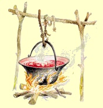
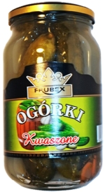
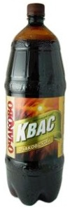

Beilagen,
Garnierungen
und Salate / K�ret �s Sal�ta
Zupfnudeln /
Csipetke
Der Teig f�r Csipetke bzw.
Zupfnudel wird ohne Wasser, ausschlie�lich aus Ei und Mehl
geknetet und mit Salz abgeschmeckt.
Bei Allergie kann das Ei mit Wasser ersetzt werden, dann
aber bitte Hartweizenmehl, m�glichst auch Hartweizengrie�
verwenden. Das Ergebnis im Teller schmeckt �hnlich
bis gleich.
Die Salzmenge im Teig ist
Geschmacks- bzw. Gew�hnungssache. Soll der Mann nachher viel
trinken, dann viel Salz zugeben, soll er gesund bleiben, spart
man mit dem Salz, so viel, man kann. Die Italiener verwenden
f�r uns ungew�hnlich wenig Salz und die Mediziner sagen, das sei der
Grund daf�r, dass der Infarkt in Italien meistens nur vom H�rensagen
bekannt ist.
Csipetke
wird als Garnierung
zum Gulasch bzw. Pörkölt gereicht und auch
in der Gulaschsuppe mit gekocht. Ihre
Herstellungsmethode ist eine zeitaufwändige, mühselige
Handarbeit, die sie aus der
Mode und irgendwann wahrscheinlich in die Vergessenheit drängen wird.
Ohne Butter ist Csipetke
gesünder, weniger
klebrig und
schmeckt vielleicht besser, als unsere Sp�tzle.
Csipetke
wird per Hand Stück für Stück aus dem Nudelteig
gezupft und
zwischen den
Spitzen der Daumen und Mittelfinger zu kleinen, ca. 1 cm dicken
Klößchen gerollt und zunächst auf einem
größeren, mit Mehl bestäubten
Brett verteilt. Die Klößchen werden nun
per Hand mehrmals solange im
Mehl gepresst und gerollt, bis sie relativ hart, aber noch geschmeidig
sind und noch nicht auseinander
rei�en. Ungeübte Finger ermüden dabei schnell. Wenn
der Teig auseinanderrei�t, gibt man ein ei zur masser und
soviel Mehl, dass der Teig nicht auseinander rei�t.
Die
hart gedrehten Klößchen werden nun
in einem möglichst kühlen, gut gelüfteten
Raum gelagert, nach ca. 12 Stunden ins
kochende Salzwasser geschüttelt und in kürzester Zeit
fertiggegart.
Kurz nachdem sie aus dem
kochenden Wasser empor quellen und oben schwimmen, werden die Csipetke
aus dem
Wasser geschöpft
und in einem Sieb gesp�lt und abgeseiht.
Übrigens: Csipetke bedeutet Gezupftes und ist identisch mit den
schw�bischen Zupfnudeln. Csipetke wird in Ungarn auf dem Lande
und nur noch in wenigen hochkar�tigen Restaurants angeboten.
Knobben, Kn�pfli,
Nockerli / Nokedli
Wie
auch immer diese Mehlspeise in Ungarn heißt, sie ist absolut
identisch
mit der schwäbischen Spätzle, auch wenn die ungarischen
Touristikprospekte von eigenem
Nationalgericht stolzieren. Der Gries wird in Deutschland �fter in den Teig
gemischt, wenn man kein Sp�tzlemehl zur Verf�gung hat und in Ungarn fast immer ausgespart.
Der augenf�llige Unterschied zu Sp�tzle war lange Zeit der
Sieb, durch den der Teig ins kochende Wasser gelassen wird.
Dieser Sieb hatte in Ungarn in der roten �ra nur eine einzige
Form, mit der nur dicke Knobben, die ungarische Nokedli
machbar sind. Das pr�gt und etwa 2-3 Generationen sind damit
aufgewachsen, weil es in den Eisenwarengesch�ften
jahrzehntelang nur einen einzigen Sp�tzlesieb (anf�nglich aus
rostendem Blech) mit runden L�chern aus der heimischer
Produktion gab - Bild rechts.
Die Ungarn können auch heute noch
nicht
vorstellen, dass diese Mehlspeise mit der gleichen Rezeptur eine andere
Form haben
könnte. Recht haben sie insofern, dass die Teigkl��chen durch anders
geformte L�cher geschl�pft anders schmecken. Das ist aber von
S�ddeutschland bis Tirol gut bekannt - schon sehr lange.
Nokedli - Nur ein
ungarisches Wortspiel - Zun�chst einmal: Nokedli hat
keine Bedeutung auf Ungarisch, das Wort klingt deutsch. "Ungarische" Nockedli nennt man
im nördlichen
Ungarn Galuschka. Dieses slawische Wort hat seinen Ursprung in den nördlichen
Karpaten von Polen �ber die Slowakei und Ukraine bis nach Transsylvanien und es wird dort
meistens wie Haluschka
ausgesprochen. Auch die nach nationaler Identit�t suchenden Slowaken versuchen ein eigenes
Nationalgericht aus der Sp�tzle zu erkoren, genauso wie die Ungarn - von wegen ungarisches Nationalgericht!
Mit den in Ungarn
�blichen runden L�chern produziert man die von den
Ungarn als Nationalspeise hochgepriesen Nokedli bzw. schw�bischen Kn�pfli oder bayerischen Knobben, die in der
Schweiz Nockerli genannt werden - und das klingt nach Nokedli. Die donauschw�bische Herkunft
ihres Nationalgerichtes k�nnen die Ungarn gar nicht abstreiten.
Unser Favorit ist die Pasta aus der original schw�bischen
Sp�tzlepresse aus Schweizer Produktion, wie sie bei den
Donauschwaben im s�dlichen Ungarn bekannt ist. Sie ist eine Art Kartoffelpresse, die durch unterschiedlich gro�e
und unterschiedlich geformte L�cher die f�r Sp�tzle gew�nschte
Diversit�t der Pasta erm�glicht. Je nach Gericht k�nnen die
hausgemachten Sp�tzle besser schmecken, ja sogar besser, als die gleich gro�en ungarischen Nokedli zum
ungarischen Gulasch.
Die einfachste und schnellste Art f�r Anf�nger und ge�bte K�che, Sp�tzle
oder Knobben/Kn�pfli (in Ungarn: Nokedli) zuzubereiten, zeigt das folgende Werbevideo.
Auch wir
sind der Meinung, einfacher geht es nicht - aber dem
Geschmack nach favorisieren wir weiterhin die
blattnudelartige Pasta aus der original
schw�bischen Sp�tzlepresse. Hier das Werbevideo f�r die
einfachste Sp�tzlepresse:
Zutaten
f�r 4 Personen - aus eigener Erfahrung etwas abweichend vom Video:
400 g Mehl, 200 g Hartweizengrie�, 6 Eier, Salz und 50 g Butter oder
Margarine, Wasser bei Bedarf.
Tipps zu den Zutaten:
1 Ei pro 100 g Mehl. Man kann mit den Eiern sparen, 2
reichen auch, dann wird aber mehr Wasser ben�tigt, der Teig
und die Sp�tzle werden dann weniger z�h und geschmeidig. Vom Mehl sollte je nach Verwendung
10-50% Hartweizengrie� sein. Nicht �berall, aber im Schwabenland ist
spezielles Sp�tzlemehl, ein grob gemahlenes Hartweizenmehl erh�ltlich,
dadurch er�brigt sich der Grie� dort. Je mehr Grie� verwendet
wird, umso mehr Butter wird ben�tigt, bei wenig Grie� kann
man die Butter weglassen. Je nach Verwendung wird hier und da ein wenig Muskatpulver (das
wird im Werbevideo als Teigw�rzer angepriesen) in den
Teig ger�hrt, so z.B. bei K�sesp�tzle, wenn die Sp�tzle
vorher anger�stet wird.
Zubereitung: Mehl, Grie�,
Salz, Eier und Butter in eine
Schüssel
geben und
mit einem Kochlöffel gut verrühren. Durch die Zugabe von Mehl oder
Wasser kann die Konsistenz bestimmt werden. Ca. 20 Minuten
ruhen lassen, damit das Mehl und der Grie� aufquellen. Nun
soll der Teig kr�ftig geschlagen werden, bis er Blasen
schl�gt. Ob Sie
wie im Werbevideo, den Teig lieber durch einen Spätzlesieb,
eine Sp�tzlepresse (wie Kartoffelpresse mit m�glichst unterschiedlichen
L�chern) ins siedende Wasser dr�cken oder von einem Sp�tzlebrett
mit einem Schaber oder langem Messer schnippeln, das ist
Ihre Entscheidung. Die fertigen Sp�tzle sollte man nur solange
kochen, bis sie an die Wasseroberfläche steigen und dann
m�glichst schnell aus dem siedenden Wasser in einen gro�en Sieb
heben,
einmal im Wasserstrahl sp�len und abtropfen lassen. Die
Sp�tzle d�rfen nicht lange im kochenden Wasser schwimmen,
sonst saugen sie Wasser in sich und werden klebrig weich.
Nach dem Abtropfen ist es sinnvoll, die Sp�tzle einige
Zeit lang zum trocknen in einen
lauwarmen Ofen zu schieben. Manche schwenken daf�r die
Sp�tzle kurz in einer hei�en Bratpfanne mit sehr wenig
Speise�l oder Butter.
Geübte Köche
schnippeln den Teig spätzleartig mit einem langen Messer oder Schaber von einem Sp�tzlebrett
ebenso schnell, wie oben im Werbevideo vorgef�hrt. Wie das geht, erkl�rt Frau Lutz im folgenden
Video - also Firrle, Firrle, nass und glatt vorstreiche und immer wieder Neidunga
(hineintunken):
Tipp: Bei der Zubereitung von jedem Eierteig
beginnt man immer mit den Eiern, pr�ft sie
alle und notfalls entsorgt die Faulen, bevor sie mit den
anderen Zutaten in Ber�hrung kommen k�nnten.
Die Kennzeichnung von
Eiern in der EU seit 2004 zeigt das Bild rechts. Bildquelle:
Stiftung Warentest.
Nudeln aus Kartoffelteig
Kartoffelkl��e /
Krumpligomb�c
Zutaten: 5-6
mittelgro�e Kartoffeln, 2 EL Hartweizengrie�, 5-6 EL Weizen-
oder Maismehl, 1 TL Salz. Eventuell 2 Eier und auch 1 TL
Natron. Zubereitung:
5-6 mittelgro�e Kartoffeln in
Salzwasser weichkochen, abseihen und ausk�hlen lassen.
Die Kartoffel pellen und in
einem Sch�ssel stampfen oder fein reiben.
2 EL Hartweizengrie�, 5-6 EL
Weizen- oder Maismehl, 1 TL Salz, evtl. 1 TL Natron und
2 Eier dazugeben, kr�ftig durchkneten, bei Bedarf Mehl
dazumischen, bis der Teig geschmeidig zusammen steht.
Zwischen den H�nden Kl��e
formen und in kochendes Salzwasser geben, mit Holzl�ffel
gelegentlich umr�hren, damit die Kl��e nicht am
Topfboden haften bleiben.
Wenn die Kl��e nach 1-2 Minuten
oben schwimmen, noch 2-3 Minuten lang weiterkochen und
mit einem Siebl�ffel absch�pfen.
Tipps:
Allergiker k�nnen auf die Eier verzichten, stattdessen wenig
Wasser verwenden, damit der Teig geschmeidig zusammen steht.
Ohne Ei unbedingt mehr Hartweizenmehl in der
Teigmischung verwenden.
Ohne Ei gekochten Kl��e
kann man einfrieren und werden nach dem Auftauen nicht
klebrig/matschig, sondern auch nach dem erneuten
Erw�rmen noch immer so fest, wie frisch gekocht.
Die Verwendung von Natron geht aus der Mode - aus purer
Bequemlichkeit und weil die Werbung Backpulver und nicht das
preisg�nstige Natron lobt. Durch die Verwendung von Natron
werden die Kl��e weicher, sie stehen trotzdem besser
zusammen. Natron wurde schon von den alten �gyptern in allen
Backprodukten verwendet, seitdem sorgt es gegen Aufsto� und die mit Natron
gekochten Kl��e sind bek�mmlicher, verursachen weniger
Sodbrennen.
Schupfnudeln /
D�d�lle
Das Wort D�d�lle regt auch die Ungarn zum Schmunzeln an. Man kann
es nicht �bersetzen, es hat keine
Bedeutung und hat seinen Ursprung wahrscheinlich in der
Kindersprache. Dabei handelt es sich um die Schupfnudel der
Donauschwaben,
die �ber Bayern und �sterreich bis im gesamten
Ungarnland gut bekannt ist und sich dort zu einer kulinarischen
K�stlichkeit entwickelte. Unter verschiedenen Bezeichnungen wird
D�d�lle sogar von der in Ungarn lebenden slowakischen
Minderheit, von den Palotzen als ihr eigenes Nationalgericht betrachtet. D�d�lle unterscheidet sich von
unseren Schupfnudeln, indem sie nicht
w�rstchenf�rmig, sondern kl��chen-, ja sogar pfannkuchenf�rmig
oder wie Schweizer R�sti, sehr unterschiedlich als Beilage oder
als Hauptgericht gereicht. Laut Grundrezept wird ein mit Mehl angereicherter Kartoffelbrei
gebraten oder gebacken,
aber das Ergebnis am Teller �berspannt alle Stufen von der
Bauernk�che bis in den Sternenhimmel hinein.
D�d�lle ist in weiten
Teilen von Ungarn unbekannt, westlich und s�dwestlich vom
Plattensee geh�rt sie t�glich auf den Tisch. In guten Zeiten
wird sie als Beilage zu Wildgerichten mit Steinpilz u.a.
K�stlichkeiten gereiht, an einfachen Tagen kann D�d�lle das
Hauptgericht sein. D�d�lle gilt als Armutszeichen, weil schon die
Bezeichnung D�d�lle f�r ungarische Zungen ebenso l�cherlich,
ja sogar abwertend klingt, wie f�r Deutsche. Dabei handelt
es sich um das allt�gliche Essen in gro�en Landstrichen. Die Bewohner von Nagykanizsa und Umgebung
bestehen schon lange darauf, D�d�lle sei ihre Landesspezialit�t.
Wie auch immer - nun zum Rezept.
Das folgende Video zeigt die Zubereitung von D�d�lle. Zutaten
und deutsche Beschreibung der Zubereitung siehe unter dem
Video:
Zutaten: 1 kg Kartoffeln (keine
Fr�hkartoffeln!), ca. 400 g Mehl, 1 TL Salz, 1 TL
Pfefferpulver, 1-2 Zwiebeln, 2 EL Schmalz.
Tipp: Die ben�tigte Mehlmenge kann sehr unterschiedlich
sein. Sie ist abh�ngig von der Kartoffelsorte und von der
Menge der restlichen Kochfl�ssigkeit im Topf, die das Mehl absorbieren
soll.
Zubereitung: Die Kartoffeln in wenig Wasser
kochen, das Wasser nicht abgie�en, die Kartoffeln zusammen mit
der Kochfl�ssigkeit im Topf zerdr�cken. Den Kartoffelbrei
allm�hlich mit Mehl verl�ngern und weiterstampfen, bis der
Brei so dickfl�ssig ist, wie nur m�glich. Wichtig ist, dass
die Kartoffelmasse und das restliche Kochwasser hei� sind,
damit das Mehl darin gekocht wird. Am besten stampft man den
Brei in einem Topf �ber einer Feuerstelle mit schwacher
W�rmezufuhr. Zwischendurch salzen und
pfeffern und solange stampfen, bis ein harter Brei entsteht,
der in kleinen Klumpen, wie im Video
gebraten oder gebacken wird.
Variante 1 -
gebraten: Die Zwiebeln kleinhacken, in einer Pfanne im
Schmalz goldgelb anger�sten und die mit Essl�ffel gesch�pften Breikl��e
(mit 2 L�ffeln kann man sie auf gleiche Gr��e formen) darin braten,
wie im Video.
Variante 2 - gebacken:
Die Breikl��e in einer Backpfanne, z.B. R�mertopf verteilen. In
einer Pfanne kleingehackte Zwiebeln goldgelb r�sten und �ber
die Breikl��e gie�en. Bei 180�C ca. 20 Minuten lang
�berbacken. - Manche �bergie�en die D�d�lle zus�tzlich mit
viel Sauerrahm, andere betr�ufeln damit die fertigen D�d�lle
am Teller.
Variante 3 - gebacken: Wie
Variante 2, jedoch reichhaltig zubereitet, so z.B. mit
Schinkenw�rfeln und weiteren Zutaten nach eigenem Gutd�nken
bereichert, gebacken und beispielsweise mit Lauchzwiebeln und
Petersiliengr�n appetitlich garniert.
D�d�lle wird in manchen Landstrichen als das Beste auf Erden
betrachtet. Im
Jahre 2004 gr�ndeten einige Bewohner von Nagykanizsa einen
Verein, der die Traditionen pflegen soll, die mit D�d�lle
verbundenen sind. Seitdem veranstalten sie j�hrlich, Anfang
bis Mitte September ein
D�d�lle- und Weinfestival, das bisher mit laufendem
Zuwachs stolzieren kann. Das Festival ist zugleich ein
Wettbewerb, wo die besten, weitgehend kulinarische
D�d�lleteller ausgezeichnet werden. Wie kulinarisch D�d�lle
als Hauptgericht oder Beilage
zubereitet werden kann, zeigen die folgenden Bilder vom
gastronomischen Festival:
Sztrapacska ist die slowakische Bezeichnung von Knobben bzw.
Nockerli aus Kartoffelteig und unterscheidet sich von den
Schupfnudeln lediglich darin, dass die Rohkartoffeln fein
gerieben, aber nicht bzw. selten fein zerstampft werden. Der Sztrapacskateig
wird in das kochende Wasser gehobelt und gekocht, wie Kn�pfli,
Knobben oder Nockerli.
Sztrapacska ist die ungarische Schreibweise. Das Wort
entstammt aus dem slowakischen strapačky.
Die im Norden von Ungarn lebende slowakische Minderheit wird
von den Einheimischen Pal�c (Palotzen Volk) genannt und unter
ihnen ist Sztrapacska besonders beliebt. Sztrapacska wird von
den Slowaken auch Haluschka genannt und so ist sie
wahrscheinlich von polnisch-ukrainischen Ursprungs, denn
Haluschka ist in diesen L�ndern weit verbreitet. Auch wenn die
nach nationaler Identit�t strebenden Slowaken daraus ein
eigenes Nationalgericht erkoren wollen, Sztrapacska ist
lediglich eine regionale Bezeichnung f�r Schupfnudeln.
Sztrapacska isst man gelegentlich als Beilage, wie Sp�tzle,
meistens jedoch ist Sztrapacska ein Hauptgericht, genauso wie
D�d�lle bzw. Schupfnudeln bei den Ungarn in den �rmsten
Landstrichen.
Das Rezept
von Sztrapacska unterscheidet sich von den Schupfnudeln darin,
dass hier
Die Kartoffeln nicht zerstampft,
sondern fein gerieben werden,
Da gerieben Kartoffeln weniger griffig
sind als gestampfte, ist das Mehl im Sztrapacskateig
weniger geschmeidig gebunden und so kann Sztrapacska beim
Kochen auseinander fallen. Um das zu verhindern, werden
1-2 Eier in den Kartoffelbrei gemischt. Je mehr Mehl und
Eier in den Sztrapacskateig gemischt werden, umso mehr
�hnelt Sztrapacska unseren Sp�tzle in der Form von Knobben,
Kn�pfli oder Nockerli,
Sztrapacska werden wie Sp�tzle
ins Kochwasser gehobelt und nicht gebraten oder gebacken.
Alle Varianten von Sztrapacska sind absolut
identisch mit den ungarischen
Fleckerlngerichten:
Sztrapacska mit Quark:
....mit Sauerrahm betr�pfelt, mit hei�em Schmalz �bergossen,
mit Grammeln bestreut und kr�ftig gesalzen. Wenn im hei�en
Schmalz auch noch ger�stete Zwiebelnringe schwimmen, dann ist
die freude riesig. Sztrapacska so serviert ist genauso hoch
angesehen bei den Slowaken, wie
Quarkfleckerln bzw. T�r�scsusza bei den Ungarn.
Weitere beliebte Varianten von Sztrapacska sind:
Sztrapacska mit K�se (�hnelt K�sesp�tzle), Sztrapacska
mit Kraut (�hnelt
Krautfleckerln).
Herencs�ny ist ein Palotzendorf mit 650
Einwohnern und einem Dorfmuseum, wo Traditionen gepflegt und
gelegentlich vorgef�hrt werden. Herencs�ny liegt 10 km s�dlich
von Sz�cs�ny an der slowakischen Grenze, in Luftlinie etwa
40 km nord�stlich von Budapest, aber in einem geschlossenen
Bergwaldgebiet so isoliert, dass man von der Hauptstadt �ber
100 km fahren muss, die Ortschaft zu erreichen. Das Dorf ist
auch von den Nachbargemeinden relativ gut isoliert. Die
Kochkunst der Frauen beruht auf uralte Traditionen des
Palotzenvolkes - aus dem
Haluschkateig so oder so, diverse Gerichte auf den Tisch zu
zaubern. In der Dorfk�che erf�hrt man, wie eint�nige, trotzdem
schmackhafte Gerichte jahrhundertelang auf den Tisch gezaubert
wurden. Die Bev�lkrung war immer sehr arm und ern�hrte sich
von gekochten, gebratenen oder sogar gebackenen
Schupfnudel-Varianten. In diesem Dorf sagt man Haluschka, das
Wort Sztrapacska ist hier unbekannt. Der Kartoffelteig wird zu
den einzelnen Gerichten etwas unterschiedlich zubereitet.
Immer mit gekochten, aber dann aus geriebenen oder gestampften
Kartoffeln, je nach Rezept mit mehr oder weniger Mehl und
Eiern gemischt. Wir haben in der Dorfk�che die Zubereitung
folgender Gerichte gesehen:
Krumplis Laska:
Es ist eine Art Pafannkuchen. Aus dem mit Nudelholz
ausgebreiteten Kartoffelteig backt man ohne Fett �ber dem
Sparherd eine Art Pfannkuchen, wie im folgenden Video gezeigt
wird:
Pir�tott leves (R�stsuppe): Haluschka wird im
Suppenteller mit einer klaren Br�he �bergossen. Dazu werden
die kleingehackten Zwiebeln
im Fett anger�stet,
dabei mit Salz und Paprikapulver gew�rzt,
anschlie�end mit Wasser
aufgef�llt und einmal aufgekocht.
Das Fett ist �berhaupt ein
wichtiger Teil der Ern�hrung hier, dabei handelt es sich immer
um Schweine- oder G�nseschmalz, der oft �ppig und hei� �ber die verschiedenen
Haluschkagerichte gegossen wird, so auch in diese Suppe. Echte
Armenk�che, wie eben die Bewohner schon immer gelebt haben,
genauso wie im Schwarzwald und im gesamten Alpengebiet mit
Sp�tzle und sogar in Wien war ein gro�er Teil der Bev�lkerung
froh, wenn sie t�glich eine Frittatensuppe in den aus Spenden
finanzierten Armenk�che bekam. Dar�ber spricht man heute nicht
mehr, in der Literatur und den Medien ist es gewinnbringender,
wenn man aus vergangenen
Zeiten meistens nur �ber das Leben in den Adelsh�usern
berichtet.
Bukta (Buchteln): Wenn zwischen zwei
Haluschka-Hefeteigschichten Pflaumenbrei gelegt, diese rund
ausgestochen und auf einem Blech gebacken werden, dann nennt
man diese Kuchen Bukta und das ist die �bersetzung f�r
Buchteln auf Deutsch.
Herőke (Schmalzgeb�ck):
wird auf Ungarisch zwar "farsangi f�nk" genannt (=Beliner
Pfannkuchen), auch von den Palotzen, ist jedoch nicht das
gleiche Geb�ck.
Beim Herőke wird ein Hefeteig ausgerollt, auf ca. 8x8 cm
Quadrate geteilt, immer in Schmalz (nicht in �l) frittiert und
genauso wie ein Schmalzgeb�ck in Hamburg gelegentlich mit
einem Obstbrei betr�pfelt und immer mit Puderzucker bestreut
genossen - irgendwie doch �hnlich, wie der Berliner und wenn
die Hamburger dieses Schmalzgeb�ck als ihre eigene
Landesspezialit�t anpreisen, dann spricht es f�r die
Internationalit�t aller K�chen.
Frentő (ungarisch: lep�ny = Fladen): Mit
Fladen ist hier ein pizza�hnlicher Kuchenboden gemeint.
Aus dem auf Nudelholz gewalzten Kartoffelteig wird ein Kuchenboden
vorgebacken, der meistens mit Quark reichlich bedeckt, mit Sauerrahm
begossen und mit
Zimt �ppig bestreut �berbacken wird.
Beilage: Sollte Sztrapacska oder Haluschka als Hauptgericht
und nicht als Suppe serviert werden, dann mit Sauerteiggurken, Gurken- oder
Blattsalat, wie zu allen Fleckerlngrichten.
Schlambutz / Slambuc,
�h�m
Schlambutz ist lediglich unser Versuch, den Namen dieses
wenig bekannten Pusztagerichtes f�r Deutsche synonym leserlich zu schreiben.
Das ungarische Wort Slambuc ist serbischen Ursprungs, bedeutet nichts
auf Ungarisch, kein Ungar wei�, was es bedeuten soll, aber so ist dieses Gericht landesweit bekannt.
Die
wenigsten Ungarn wissen, dass es auf Ungarisch �h�m genannt wird
dort, wo man das Gericht �fter zubereitet, in der Puszta bei
Hortob�gy. Auch das Wort �h�m ist auf den
ersten Blick ohne Bedeutung, eine Erkl�rung liefert die folgende Legende: Ein Junge
wurde gefragt, ob es ihm schmecke. Er wollte "Aha"
sagen, das die Ungarn oft mit geschlossenen Lippen wie �h�m aussprechen. Da er seinen
Mund voll hatte, kam lediglich ein �h�m heraus - und
seitdem wird dieses Gericht in der Puszta bei Hortob�gy
�h�m genannt.
Schlambutz ist ein in
Deutschland v�llig unbekanntes, mit dem
Krumplist�szta bzw. Grenadiermarsch
nah verwandtes, regional bekanntes Kesselgericht der Sch�fer
und
Rinderhirten in der Puszta bei Hotob�gy (nahe Debreczin). Die
Verwandschaft beider Gerichte ist so nah, dass den Unterschied
praktisch nur der Kessel als Kochgeschirr ausmacht.
Als Kochgef�� ist ein Kessel erforderlich, in dem nichts
anhaftet. Sie werden aus Schmiedeeisen geh�mmert, auch die
emaillierten oder keramisch beschichteten Kessel eignen sich
hervorragend.

Schlambutz
wird zuerst genauso wie P�rk�lt im Kessel �ber einer
Feuerstelle zubereitet. Zuerst wird viel Fetter Speck zum
schwitzen gebracht und weitgehend zerlassen. In dem so gewonnenen Schmalz r�stet und kocht
man in Scheiben geschnittene Kartoffeln mindestens 30
Minuten lang. Nun werden Fleckerln - evtl. auch wenig Wasser
- dazu gegeben, mit den
Kartoffeln laufend vermischt und noch einmal mindestens 30
Minuten lang gekocht, bis die gar gekochten Kartoffeln und Nudeln die Fl�ssigkeit v�llig in sich
ziehen und dann das gesamte Gericht wie ein Klumpen fest zusammen steht. Nun
wird der Klumpen nach einer alten Sitte 32mal gewendet und
dabei die �u�ere Nudelschicht rosafarbig anger�stet. Gerade
die so anger�steten Nudeln sind eine besondere K�stlichkeit.
Die Zahl 32 ergibt sich aus der Anzahl der Karten in der
Packung. Nach jeder Wende wird eine Karte umgelegt, damit
man nicht schummelt und der Schlambutz so anger�stet wird,
wie nur m�glich. Wie das geht, zeigt das folgende Video, das das Rezept und
die Zubereitung auf Englisch beschreibt.
Vermerk: der m�chtegern Koch verga� alle
Geschmack gebenden Komponente zu nennen. Im einfachsten
Grundrezept steht nur Salz. Ihm sei verziehen, wenn der
verwendete Speck stark salzhaltig ist, wie er in Ungarn als
S�sszalonna bzw. P�kelspeck erh�ltlich ist. Das darin
enthaltene Salz d�rfte f�r den ganzen Kessel ausreichen.
Meistens verwendete W�rzmittel sind Salz,
Zwiebel, Pfeffer- und Paprikapulver, Tomate und Gem�sepaprika. Die im Video verwendeten Fleckerln sind vergleichbar mit den LaSagnaplatten, wie man sie in deutschen
Labensmittelgesch�ften kaufen kann. Ein weiteres Kriterium,
das Wenden des Klumpen wird im Video vernachl�ssigt, wom�glich
wegen des Schwergewichtes im Kessel. Viele Schlambutzkocher
sagen, man darf kein Kochl�ffel verwenden, sondern nur den
Kessel sch�tteln und wenn der Klumpen zusammensteht, dann
beginnt man mit dem Umlegen der einzelnen Karten nach jedem
einzelnen Wendevorgang insgesamt 32mal.
Die Gemeinde N�dudvar, rd. 40 km s�dwetlich von Debrecen, organisiert
seit einigen Jahren �h�m-Kochwettbewerbe und dort
sieht man, dass dieses sehr einfache Pusztagericht mit
diversen zus�tzlichen Zutaten auf wieviele
verschiedene Art und Weise zubereitet werden kann. Meistens
gibt man Tomate, Gem�sepaprika, Wurst, Fleisch, sogar
Scweinehaxe dazu und so n�hert sich das einfache
Kesselgericht Schlambutz dem P�rk�lt oder Kesselgulasch. Das
�h�m-Festival findet bisher etwas ungeschickt im April statt,
weil das �rtliche Strand-Thermalbad erst ab 1. Mai bis Ende
August (t�glich au�er Montag) ge�ffnet ist. Daf�r ist jedoch das
ganzj�hrig ge�ffnete Thermalbad in Hajd�szoboszl�, rd. 20 km
�stlich in Richtung Debrecen f�r motorisierte Touristen
schnell zu erreichen.
R�sti /
T�csni
Auch wenn man im deutschsprachigen Raum R�sti als
Deutschschweizer Spezialit�t betrachtet, die unz�hligen
orts�blichen Bezeichnungen in Ungarn sprechen daf�r, dass
R�sti ihren Ursprung wom�glich anderswo haben k�nnte. Die
Frage nach diesem Ursprung ist gleich mit der Frage nach dem
Anfang von Ei oder Huhn.
Die Folge von so vielen Bezeichnungen
f�r das gleiche K�chenprodukt in einem Land ist, dass der Ungar h�chstens
ein oder zwei davon kennt und dumm schaut, wenn er R�sti unter
einem anderen Namen angeboten bekommt. T�csni wird
wahrscheinlich am h�ufigsten ausgesprochen, aber die meisten
Ungarn kennen auch dieses Wort nicht.
T�csni bzw. R�sti unterscheidet sich von den Schupfnudeln darin, dass man die Kartoffeln ungekocht/roh
reibt, sie mit Mehl, Ei und Sauerrahm vermengt und dieser
Teig wird nicht gekocht, sondern in einer Pfanne gebraten.
Diese Einleitung d�rfte schon ausreichen, wenn man die
Schupfnudeln einmal selbst gemacht hat und wir verzichten
daher auf die Wiedergabe einer Rezeptur. Das folgende Video
d�rfte allen K�chenlaien helfen, die Schupfnudeln schon
kennen, auch wenn sie kein Ungarisch verstehen. Die Zutaten
siehe unter dem Video:
Zutaten f�r 4 Personen: 1 kg
Kartoffeln, 200 ml Sauerrahm, 4-5 EL Mehl, 1 Ei, 4 TL Salz,
3-4 Knoblauchzehen, 100 g geraspelter K�se.
Serviert wird T�csni gebraten, wie im Video gezeigt pur mit
nur einer Knoblauchtunke befeuchtet und gesalzen, mit
Sauerrahm und/oder H�ttenk�se. R�sti schmeckt nur warm, allzu hei�
sp�rt man nur hei�en Fett, kalt schmeckt sie nicht mehr.
Übrigens
- T�csnifestivals
werden in Ungarn vielerorts veranstaltet. Den gr��ten Rummel
macht man momentan in der Ortschaft Biri in der N�he der
nord�stlichen Stadt Ny�regyh�za - siehe:
T�csnifesztival
S��-Saure Garnierung /
�des-Savany� k�ret
Damit das Schnitzel nicht zu
trocken ist, wird es meistens mit einer dem
Letscho �hnelnder Sauce garniert. Weniger bekannt ist eine
s��-saure Garnierung aus der Gro�en Tiefebene zwischen Donau
und Thei�. Weit verbreitet ist diese Sauce unter den Kumanen
und deren Nachfahren in der Puszta.
Zutaten: 5-6 mittelgro�e Zwiebeln, 1 TL Salz,
2 EL Zucker, 2 EL Essig.
Zubereitung: Zwiebeln reinigen und quer in Ringe
schneiden. Die Zwiebeln in einem Topf mit soviel Wasser
�bergie�en, dass die Zwiebelringe bedeckt sind. Salz und
Zucker dazu mischen und langsam kochen, bis die Zwiebelringe
glasig werden. �bernacht an einer k�hlen Stelle stehen lassen.
Vor dem Servieren (als Garnierung) mit Essig abschmecken.
Salatgem�se
Gurkensalat /
Uborkasal�ta
Rezept und Zubereitung siehe im
Video....
Wir
haben YouTube nach einem akzeptablen Video f�r die Zubereitung
von Gurkensalat auf ungarische Art durchsucht und fanden nur
in einem einzigen Video das, was man in Ungarn als Grundrezept
f�r den Gurkensalat kennt. Alle anderen Darsteller versuchen
den Zuschauern etwas eigenartiges vorzugaukeln, machen Werbung f�r ihre
B�cher und Homepages, machen ihren Gurkensalat mit fremdartigen
�nderungen ganz anders oder erz�hlen einiges,
die sie so oder so als Halunken entlarven. Beispielsweise die
angeblich ungarisch
st�mmige Dame in den USA, die um 3' 20" in ihrem Video von der Paprikadose abliest, die
Gro�stadt
Szeged liege am Stadtrand von Budapest. Lt. Google liegen beide St�dte 172 km voneinander
entfernt. ...und dann hat sie noch 3 YouTube Freunde, die sich zum Wort melden und behaupten, nur sie
k�nne Gurkensalat echt ungarisch zubereiten, wie bei Mama....
Wir denken, sie m�sste diese Mama sein, die die Texte f�r die
3 YouTube Freunde schrieb... Im
folgenden Video wird Gurkensalat typisch ungarisch zubereitet,
allerdings ist dieses Video eine Mixtur und eigentlich f�r
Kartoffelpaprikasch gedacht. Vielleicht h�tte man lieber den
Teil mit dem Gurkensalat in ein getrenntes Vorf�hrvideo schneiden m�ssen. Wie auch
immer, im folgenden Video sieht man, wie Gurkensalat in Ungarn
ganz einfach zubereitet wird. Rezept und deutsche Beschreibung unter dem Video -
Gurkensalat ab 2 Minuten und 45 Sekunden:
GURKENSALAT REZEPT -
wie im Video ab 2 Minuten 45 Sekunden:
Zubereitung: Die Gurken reinigen/sp�len,
sch�len, in Scheiben schneiden, leicht salzen, umr�hren. Das
Salz soll mindestens eine halbe Stunde lang wirken, bevor man
den Gurkensaft auspresst.
Beize: In
einem Salatsch�ssel 200 ml Wasser, 2 EL Salatessig, 2 TL
Zucker und evt. eine Priese geschnittene Estragonbl�tter verr�hren
und unter gelegentlichem R�hren folgende
Zutaten dazu mischen: 2 TL Salz, 2 geriebene Knoblauchzehen,
1 TL Paprikapulver und die ausgepressten Gurkenscheiben.
Ge�bte erkennen den
richtigen Geschmack der Beize und bei der
Zubereitung probiert man laufend, ob vom Essig, Salz oder
Zucker noch etwas fehlt.
�brigens:
die Beschreibung hier bezieht sich auf das Video. Paprika- und
Pfefferpulver geh�ren nicht zum Grundrezept von Gurkensalat.
Tipps: Je l�nger das Salz den Gurkensaft
entzieht (kann einen halben Tag lang ziehen), umso weniger
knackig, daf�r aber feiner werden die Gurken. Sie ben�tigen
etwas Geduld, bis der Zucker in der Salattunke
vollst�ndig aufgel�st wird, aber diese Zeit sollten Sie
unbedingt nehmen. Hier und da kommen gleich eine Priese geschnittene Estragonbl�tter oder manche verwenden gleich Estragonessig.
Statt Estragon kann man auch Dill untermischen. Viele schneiden
d�nne Scheiben von roten bzw. lila Zwiebeln oder
Schalotten in die
Beizfl�ssigkeit. Es wird zwar kein Gurkensalat mehr, aber
viele schneiden Tomaten und Paprika dazu und lassen die
Beizfl�ssigkeit kurz wirken.
Am Tisch nimmt jeder seine
gew�nschte Portion aus dem Salatsch�ssel. Wenn nicht schon
geschehen, eine Priese gerebelter Estragon bereichert den
Geschmack individuell auch nachtr�glich. Viele toppen einen Batzen
Sauerrahm darauf, bevor man den Salat mit Kr�utern der
Provence, Estragon, Dill o.�. bestreut. Ein paar Schuss
Worcester Sauce sorgt f�r die raffinierte Note, die gut zu Schnitzel, Gulasch- und
Fischgerichten passt.
Sauerteiggurke /
Kov�szos uborka
Sauere Gurken kannte man schon vor rd. 8.000 Jahren in
Mesopotamien, mindestens zwei Jahrtausende vor der Biblischen Sch�pfung,
trotzdem werden sie im Alten Testament als eigene Errungenschaft
gepriesen. Ist das
der Grund f�r die gezielte Vernichtung historischer
Beweist�cke im Nahen Osten zu Anfang des 21. Jahrhunderts?
Die Sauerteiggurke ist eine in Ungarn
beliebte Variante der Salz-Dill
Gurken, fast identisch mit den Spreewaldgurken, die von den Polen abgekupfert
wurden, bevor Polen gro�fl�chig zu Deutschland kam. Die
polnischen und die Spreewaldgurken waren urspr�nglich nach einer ca.
sechsw�chiger G�rperiode verzehrfertig. Die Polen kennen
beide Methoden, im Spreewald werden die Gurken einfacher,
immer ohne Zusatz von Sauerteig eingeweckt und vergoren. Den
geschmacklichen Unterschied, ob die Gurken mit oder ohne
Sauerteig zubereitet wurden, k�nnen die wenigsten
feststellen, weil von Haus zu Haus unterschiedlich gew�rzt
wird.
Die Spreewaldgurken werden in
letzter Zeit in Massenfertigung industriell hergestellt.
Dabei werden die Gurken ohne G�rung in einem einst�ndigen Dampfbad (in
Gasdampf mit geheimer Zusammensetzung) fertiggekocht. Was
man so in sich zwingt, ist ein Firmengeheimnis. Es bleibt zu
hoffen, dass diese Geheimnistuerei eines Tages nicht zu
einem Lebensmittelskandal f�hrt.
Die polnischen Gurken sind unter der Bezeichnung Polskie
Og�rki weltweit beliebt, in Nordamerika gut bekannt, in
Deutschland kaum, weil man hierzulande denkt, die
Spreewaldgurken w�ren eine deutsche Erfindung. Neulich
beantragte man sogar ihre Anerkennung als Weltkulturerbe.
Sch�n ist es, dass die Unesco (eine UNO-Organisation) f�r solche Ehrungen
Geld bereitstellt, wenngleich ca.
15% der Erdbev�lkerung unterrn�hrt ist und j�hrlich nahezu
10 Millionen an Hunger sterben. Auch f�r diese Menschen sind
diverse UNO-Organisationen zust�ndig.
Die
Ungarn sind mit ihren "kov�szos" Sauerteiggurken
so ziemlich auf dem Holzweg. Nicht einmal das Wort kov�sz ist ungarisch, sondern
slawisch-polnischen Ursprungs, wom�glich aus einer Zeit, als
die Polen und Ungarn einige gemeinsame K�nige hatten. Das
war noch vor dem Einfall der T�rken in Ungarn. In der ersten
verlorenen Schlacht gegen die T�rken im Jahre 1526 bei
Moh�cs im S�den von Ungarn fiel der junge K�nig der Ungarn
Lajos II, der der letzte K�nig der Ungarn aus Polen war. Die polnischen Sauerteiggurken sind
weltweit beliebt und z.B. so erh�ltlich, wie am Bild rechts
dokumentiert. In Nordamerika werden sie "leaven cucumbers"
(=Sauerteiggurken) genannt.

Viele m�gen
und trinken die Fl�ssigkeit, in der die Sauereiggurken
vergoren werden. Das geht solange gut, bis die
Sauerteiggurken nach althergebrachter Methode, wie unten im
Video vorgef�hrt, aus nat�rlichen Zutaten zubereitet und nicht chemisch nachgeahmt
werden, wie immer �fter bei der industriellen Massenproduktion. Einen
Sauerteigtrunk bieten viele B�ckerl�den in Deutschland
an - ein Abfallprodukt zu unversch�mt hohem Preis, das damit
begr�ndet wird (es steht auf vielen Etiketten und sogar
Brosch�ren geschrieben), dass der Sauerteigtrung, oft
Brottrunk genannt, Krebs heilt. Da wissen gesch�ftst�chtige
B�cker scheinbar mehr, als die Mediziner. Unsere Empfehlung:
kaufen Sie original polnische Sauerteiggurken und wenn die
Fl�ssigkeit aus der Flasche Ihnen zu sauer m�ndet, dann
verl�ngern Sie es mit Wasser oder was Ihnen dazu gerade einf�llt.
Dass Sauerteig die Grundlage f�r ein beliebtes
Volksgetr�nk sein kann, beweist die Beliebtheit von Kwas bei
den Russen, Wei�russen, Ukrainern und Polen. Was man in den
Plastikflaschen, wie am Bild rchts bekommt, ist allerdings
ein Imitat - Sodawasser mit Geschmackstoffen zubereitet.
Kwas kannten schon die alten R�mer! Kwas (=kov�sz auf
Ungarisch und Sauerteig auf Deutsch)wird aus Malz und
Roggen im Wasser mithilfe von Sauerteigbrot leicht vergoren. Dabei entsteht etwas
Alkohol und Kwas erinnert an Malzbier. Im Handel bekommt man
Kwas ohne und mit einem Alkoholgehalt von bis zu 1,5%, das sogar von
nicht mehr ganz kleinen
Kindern gerade noch vertragen wird. Zuhause geh�ren Hefe und
auch Zucker zu den Zutaten bei der Zubereitung von Kwas.
Damit kann man den Alkoholgehalt deutlich erh�hen. Es
schmeckt wie Bier und ist bei der sommerlichen Hitze ein
besserer Durstl�scher, als unser Bier. Kwas wird mancherorts
als Bier angeboten. F�r die h�usliche Zubereitung bekommt
man in Russland ein Kwaskonzentrat, womit auch Anf�nger
zurecht kommen.
�brigens: dem Kwas
entsprechend werden in Russland �hnlich beliebte
Durstl�scher auch aus Wei�kohl zubereitet. Auf solche
Beschreibung m�chten wir hier verzichten. Wer sich daf�r
interessiert, sollte seine Fantasie bei der Zubereitung von
Sauerkraut und Pusztasalat (Beschreibung unten) baumeln
lassen.
Kwas und vergleichbare
Produkte erh�lt man in Deutschland u.a. bei der
Lebensmittelkette
MixMarkt.

Sauerteiggurke 1 /
Kov�szos uborka 1
Sauerteiggurken produziert man unter h�uslichen
Verh�ltnissen so, wie im
folgenden Video auf Ungarisch erkl�rt wird. Zutaten und eine
deutsche Beschreibung der
Zubereitung siehe unter dem Video:
Zutaten
f�r ein 4,5 Liter Eimachglas, wie im Video:
2,5 kg krumme Gurken
- wichtig: nur knackig frisch vom Wochenmarkt oder noch besser
direkt vom Bauer, 1 Kopf Knoblauch,
2
Weinbl�tter, 1 Dillstiel, 6 TL Salz, 1 Scheibe
Sauerteigbrot.
Zu den Zutaten im Video:
mit deutlich weniger Knoblauch geht es auch. Weinbl�tter haben
nicht alle aus dem eigenen Garten. �hnlich geschmacksf�rdernd
wirken frische Bl�tter von Kirsche, Weichselkirsche und
Spinat, oder ein St�ckchen Kirschenzweig. Andere verwenden
wenige Pfeffer- und/oder Koreanderk�rner im Sud.
Zubereitung: Brotscheibe
im Toaster leicht anrösten. Gurken waschen, beide
Enden abschneiden und
prüfen, ob sie bitter schmecken - sonst wären sie
ungeeignet,
wie in den meisten Lebensmittelgesch�ften, wo man sie selten bekommt, weil die guten von den Gurkenfabriken
aufgekauft werden, damit man zuhause nicht was besseres ohne
Konservierungsstoffe und g�nstiger herstellen kann - von wegen
Gesch�ftsinteresse - am besten im Biomarkt oder beim Bauer bestellen!
Zuerst das Weinblatt auf dem
Glasboden ausbreiten und den Dill darauflegen. Die Gurken der Länge
nach beiderseits leicht einschneiden (nicht teilen, das wird im Video nur f�r
die Demonstration der Qualit�t gemacht, am linken Teller sieht
man die bessere Gurkensorte), im Glas vertikal schichten und zuletzt die
Brotscheibe darauf legen. In 2 Liter
Wasser 6 geh�ufte Teel�ffel Salz aufkochen und ins Glas füllen, dass die
Gurken
bedeckt sind. Fünf Tage lang
in der Sonne, z.B. am Fensterrand reifen lassen. Um Kleckereien zu vermeiden,
sollte das Glas in einem Sch�ssel stehen und man sollte das
Salzwasser laufend nachf�llen, was aus dem Glas heraus g�rt. Wenn die Gurken
vergoren sind, in ein
anderes
Gefäß umfüllen, in das - außer
Brot - alles
wieder eingef�llt wird. Dabei sollten die Gurken nicht mit
der
Hand angefasst werden. Gläser abschließen und kalt
lagern.
Sauerteiggurke 2 /
Kov�szos uborka 2
-
Hausrezept der
Donauschwaben
-
Zutaten und Zubereitung in einem 5 Liter Glas:
1 Bund Dill auf dem Glasboden
ausbreiten.
Eine Schicht gesch�lte und in Scheiben
geschnittene, m�glichst gro�e und alte Kartoffeln dar�ber legen.
Frisch geerntete Gurken
waschen, an den Enden einritzen und dar�ber legen.
Eine Schicht in Scheiben
geschnittene Kartoffeln dar�ber legen.
1 Bund Dill, m�glichst
mit starten Stielen dar�ber ausbreiten.
Das Glas mit lauwarmem
Salzwasser (1 EL Salz pro Liter) auff�llen.
Alles mit einem kleinem
Teller beschweren, dabei einmal leicht nach unten dr�cken,
dabei das Glas leicht sch�tteln, damit alle Luftblasen
nach oben entweichen.
Das Glas bedecken, jedoch nicht abschlie�en. Am besten
auf eine sonnigen Stelle, z.B. auf Fensterbank stellen,
jedoch in einer tiefen Schale oder Topf, damit die
Fl�ssigkeit bei der G�rung nicht herumflie�t.
Die Gurken sind nach 3 Tagen
ein Genu� - k�hl lagern!
Die Fl�ssigkeit
bleibt immer schimmelfrei klar und ist gek�hlt ein
angenehmes Erfrischungsgetr�nk.
Sauergem�se aus dem
Fass / Hord�s savany�s�g
-
Hausrezept der Donauschwaben -
Flüssigkeit:
12
Liter Wasser, 3 Liter Essig (10%-ig), 1 kg Zucker, 360 g Salz, 30
Lorbeerblätter,
30 Sauerkirschblätter, 6 handvoll Senfkörner, 40
Pfefferkörner, 30 handvoll
Meerrettichwurzel, 1 handvoll Dill, 75 g Weinsteinsäurepulver
(aus der
Apotheke), 30 g Salicyl (aus der Apotheke).
Zusammenrühren
– Den mindestens 25 Liter großen Fass darf man
anfangs mindestens 5 Tage
lang nicht verschließen. Gemüse:
Vor dem Schließen des Fasses kann soviel von
folgenden Gemüsesorten in den Fass gefüllt werden,
wie von der Flüssigkeit bedeckt
bleibt: Zwiebeln, Knoblauch, Blumenkohl, Gurke, Paprika, noch
grüne, nicht ganz
reife Tomaten, kleine Kürbisse, Weißkohl, mit
Rotkohl gefüllte Paprika,
zerstückelte Sellerieknolle.
Das
Gemüse bleibt 2-3 Jahre lang erhalten, beinahe solange
kann der Fass mit
frischem Gemüse nachgefüllt werden - immer von der
Flüssigkeit bedeckt.
Sauere Kohlk�pfe /
Savany� k�poszta
-
Hausrezept der Siebenb�rger Sachsen und Donauschwaben -
Kohlköpfe
etwa 6 Wochen vor Weihnachten einlegen, damit man sie zu Weihnachten, Ostern und
noch viele Wochen danach (je nach Lagerungsverh�ltnissen gut
6 Monate lang) genießen kann.
Das folgende Video zeigt die Zubereitung unter h�uslichen
Verh�ltnissen:
Zubereitung (in einer 50-Liter Tonne): Ganzen
Kohlköpfen die Stiele
aushöhlen. Den Tonnenboden mit folgenden Kr�utern, Obst und Gew�rzen
belegen: viel Salz, 1 Bund Bohnenkraut, 1 Bund Dill, 1
Maiskolbe (muss nicht sein, evtl. mit Maismehl ersetzen), 1
gespaltene Apfelquitte (evtl. Birne oder Apfel), 1 Zweig von
Weichselkirsche, 3-4 Lorbeerbl�tter, 30 Pfefferk�rner, evtl.
2-3 zerbrochene Peperoni. 2-3 mittelgro�e, zerspaltete
Meerrettichwurzel streut man sp�ter zwischen die Kohlk�pfe in
der Tonne (nicht nur das Salz, vor allem der Meerrettich
konserviert die Kohlk�pfe).
Die
ausgeh�hlten Kohlk�pfe �berreichlich mit Salz f�llen, in der
Tonne schichten (unten die gr��eren K�pfe f�r die Krautwickel
bzw. Kohlroulade zur Weihnachtszeit), Meerrettichwurzel
dazwischen streuen. Die Tonne 2-3 Tage lang so stehen lassen im Keller
oder auf einem k�hlen Balkon (Nordseite ist ideal), dann mit Wasser
auffüllen und
die Kohlk�pfe in der Tonne vor dem Verschlie�en (nicht
luftdicht!) mit einem Abstandhalter (St�ck Holz oder Stein)
beschweren, damit die Kohlk�pfe vom Wasser vollst�ndig bedeckt
sind.
Gut
lüften ist angesagt im Keller.
Nach 2 Wochen durch einen Schlauch in die Flüssigkeit
pusten (zum Rühren), gelegentlich, am besten alle 2-3
Tage pusten. Nach ca. 6 Wochen
ist der Sud fertig vergoren.
Sauerkraut /
Savany� k�poszta
- Hausrezept der Donauschwaben -
Zutaten: 10 g
Salz
(Steinsalz ohne Jodzusatz, kein Meeressalz!) auf 1 kg Weißkohl.
Zubereitung:
Weißkohl hobeln, salzen und stampfen. In Einmachglas
füllen, Glas verschließen.
In 3-4 Wochen fertig vergoren.
Tipp: so einfach geht es zu Hause
ohne Chemie - zudem
preisgünstiger als die Dose aus dem Supermarkt. Zum Sauerkraut geh�rt nur
Salz. Das Salz muss Steinsalz ohne jodfrei sein, weil Jod das
Kraut angreift und den Geschmack verdirbt. Manche m�gen etwas w�rzig.
Warum selbst herstellen: Sauerkraut, das man in
den Lebensmittelgesch�ften bekommt, wird heutzutage industriell
und nicht durch die Verg�rung von Milchs�ure, sondern so
preisg�nstig es geht in einem Schnellverfahren mithilfe von Essig,
Zitronens�ure unter Zugabe von Geschmacks- und S��stoffen
hergestellt. Das nat�rliche Aroma und der Geschmack bleiben dabei
auf der Strecke, je nach Fabrikationsmethode verschwindet sogar
ein Gro�teil des im Winter besonders lebensnotwendigen Vitamin C.
Was auch immer in der Werbung hochgelobt wird, hat einen
k�nstlichen Geschmack. Preisg�nstig ist nicht immer gut.
Weinsauerkraut mag f�r Ahnungslose interessant klingen, den
Geschmack nach dem schwefelhaltigen Weinstein ist nicht jedermanns
Sache und ist gesundheitlich zumindest fraglich. Es gibt gewaltige
Unterschiede im Geschmack zwischen nat�rlich, nach einem
Jahrtausende lang bew�hrten Verfahren hergestellten Sauerkraut und
dem, was man im Supermarkt mehr oder weniger billig bekommt -
manchmal sogar viel teurer, als man denkt und die
tats�chlichen Herstellungskosten den hohen Preis rechtfertigen w�rden.
M�gliche Zutaten f�r ein 5 Liter Glas
Sauerkraut pur
Variante 1
Variante 2 (siehe Video)
Variante 3
4 kg Wei�kohl 40 g Salz (ohne Jod)
4 kg Wei�kohl 40 g Salz (ohne Jod) 4 Prise Schwarze
Pfefferk�rner
4 kg Wei�kohl 40 g Salz (ohne Jod) 1 Bd. Bohnenkraut
1 Bd. Dill
Wichtige Hinweise f�r die Zubereitung:
Im folgenden Video werden die wichtigsten Schritte gezeigt. Was
man im Video nicht sieht, aber wichtig ist...... Ob man in einem
Fass gr��ere Menge produziert oder in einem 5 Liter Glas, wie im
Video, das Endprodukt sollte gleich schmecken. Beim Bef�llen des
Beh�lters bedeckt man zuerst den Boden mit einigen Kohlbl�ttern
und zuletzt wird das gehobelte und gesalzene Kraut auch von oben genauso bedeckt. Wichtig
ist das Stampfen St�ck f�r St�ck, wie im Video ersichtlich. Dabei soll das Kraut
soviel Wasser lassen, wie nur m�glich, bevor die n�chste Schicht
gelegt wird. Anf�nglich hat man wenig
Kohlfl�ssigkeit, sp�ter immer mehr. Man sollte vor allem bei den
unteren Schichten l�ngere Pausen einlegen und danach mit dem Stampfen
fortfahren. Je d�nner die einzelnen Schichten sind, umso besser
kann man die Gew�rze (wenn �berhaupt) verteilen. Das Salz greift
die Haut an, wer das nicht vertr�gt, sollte Gummihandschuhe
verwenden. Der Apfel kommt ganz zum Schluss oben darauf (wenn
�berhaupt), den soll man am besten in Scheiben schneiden und ein
bisschen in das Kraut eindr�cken. Das Gef�� mit Kohlbl�ttern
bedecken und mit einem Gewicht aus Porzellan, Steingut oder Glas
beschweren, sodass alles unter der Salzlake bleibt bevor man das
Gef�� schlie�t. Nun beginnt die G�rung, die mindestens 3-4 Wochen
lang dauert. Viele benutzen einen Schlauch und pusten Luft tief in
die Fl�ssigkeit, damit die Kohlfl�ssigkeit in Bewegung kommt und
dabei eine gleichm��ige Streuung beh�lt. Wir m�chten vom Schlauch
abraten. Einerseits k�nnen durch die Atemluft auch schlechte
Bakterien in das Lebensmittel gelangen, andererseits kommt dadurch
Luft in die Fl�ssigkeit, die an einzelnen Stellen im
Gef�� die G�rung st�ren kann. Es ist besser f�r die
gleichm��ige Konsistenz der Salzlake, wenn man
das Gef�� w�hrend der G�rung gelegentlich, aber regelm��ig ein
wenig sch�ttelt.
Video �ber die h�usliche Zubereitung:
Puszta Salat /
Csalam�d�
-
gesund, wie kein anderer Salat, sagt man
-
Das folgende Video zeigt die h�usliche Zubereitung f�r den
Wochenmarkt.
Beschreibung mit Zutaten und Zubereitung unter dem Video:
Zutaten: ingesamt 10 kg gartenfrisches Gem�se
aus Wei�kohl, Gurken, Paprikaschoten, M�hren und Zwiebeln in
einem unbestimmten Verh�ltnis zueinander, etwa so, wie im
Video vorgef�hrt. - Unser Beispiel f�r die Gem�semengen im
Video: 3,5 kg Wei�kohl, 3 kg Gurken, 2 kg Paprikaschoten, 0,5
kg M�hren, 1 kg Zwiebeln, 1 Pkg Salicyl, 1 kg Zucker, 1 l
Essig (10%), 7 gestrichene EL Salz. - Neulich wird auch
Blumenkohl beigemischt, der nach unseren Erkenntnissen eher dem Gesch�ft
dient.
Zubereitung: Das
Gem�se hobeln oder kleinschneiden, wie im Video gezeigt.
Salicyl, Zucker, Essig und Salz �ber das Gem�se streuen, alles
ordentlich durchmischen und �bernacht zusammenreifen lassen.
Dabei entsteht zus�tzliche Fl�ssigkeit, die man am n�chsten
Tag mit dem Gem�se zusammen in Weckgl�sern f�llt. Keine Zugabe
von Wasser! Vorsicht beim Verschlu� der Gl�ser: etwa 2 Tage
lang entwickeln sich Gase, die entweichen sollten, bevor man
die Gl�ser verschlie�t. Aus diesem Grund sollte man die oberen
ca. 2 cm erst nach 2 Tagen auff�llen und die Gl�ser dann verschlie�en.
Tipps zum Konservierungsmittel: im Video
wird Salicyl verwendet, wie schon zu Uromas Zeiten.
Neulich verwenden viele Weinsteins�ure (E 334) und oder auch
Natriumbenzoat (E 212). Salicyl steht in der Kritik wegen
m�glicher Nierensch�digung und weil manche allergisch mit
Atemwegsreaktionen auf Salicyl reagieren. Weinsteins�ure ist
nach heutigen Kenntnissen unbedenklich. Natriumbenzoat ist ein
Antioxydanz und sorgt bereits in kleinen Mengen daf�r, dass
das Gem�se seine Farbe und knackge Frische beh�lt. - Die
genannten Konservierungsmittel bekommt man in Apotheken, wo man auch
�ber die ben�tigte Menge informiert wird. Manche Drogerien
bieten die genannten Konservierungsmittel ebenfalls an.
Wir machen hier keine Werbung! Nach unseren Erkenntnissen
bekommt man in Deutchland vonUwe
Bornscheinaus Naumburg
die beste Ware zu einem akzeptablen, keinesfalls
�berh�hten Preis, wie dies bei den meisten deutschen Onlineh�ndlern von
ungarischen Lebensmitteln der Fall ist. Uns gef�llt auch, dass er
per DHL liefert und wir deswegen nicht kilometerweit fahren
m�ssen, wenn wir einmal verhindert sein sollten, zuhause auf die Lieferung
zu warten.
Zum
Braten jeder Art, so z.B. zum Wiener Schnitzel empfiehlt sich der
Krautsalat als Beilage, wie im folgenden Video
zubereitet. Dieses Rezept ist weit verbreitet in Ungarn und wird
in vielen Restaurants �hnlich serviert. Zutaten und
Beschreibung der Zubereitung nach dem Video:
Zutaten:
500 g Rotkohl, 500 g Wei�kohl, 2 rote Zwiebeln.
Zutaten f�r die Marinade: 3 EL Speise�l, 2 EL
Weinessig, Salz, Puderzucker, 1 EL Senf, 2 TL gemahlener K�mmel Zubereitung:
Weiß- und Rotkohl hobeln, 2 Minuten lang blanchieren und abseihen. Zwiebeln in Scheiben schneiden, Kraut
dazu f�gen. Alle Zutaten f�r die Marinade mischen und in die Kraut-Zwiebelmischung r�hren.
Einige Stunden lang in den K�hlschrank stellen und kalt servieren.
Tipp: Die hier vorgef�hrte Marinade ist ein
Grundrezept, das anders zusammengesetzt werden kann, aber
Essig, Salz, Zucker und K�mmel
geh�ren immer dazu.
Sie
wollen endlich mal ein Gulasch nach
Originalrezept in Budapest genießen. Dann nichts wie hin.
Das Essen in Ungarn ist fett und schwer, damit muss man einfach
rechnen, wenn man in Ungarn einen Urlaub macht.
Zur
ungarischen Küche
gehört nun mal das Schmalz. Als
Geschmacksträger
bringt es die Zwiebeln und den Paprika zur Geltung.
Es ist viel gesünder, als sogenannte
Ernährungsberater in Deutschland denken, denn
der Mensch kann die genetisch vorhandene Abwehrkraft
gegen den Krebs nur durch fettes Essen und viel Bewegung
stärken.
Niemand sagt, dass man viel essen muss!